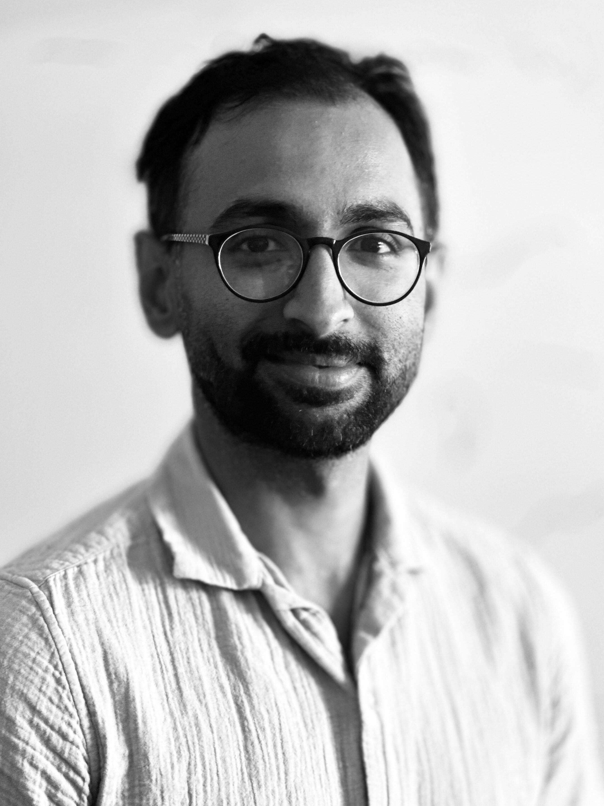

Photonic Integrated Circuits · Quantum Information
PhD Candidate · Joint Quantum Institute, University of Maryland
I work at the intersection of photonics, quantum optics, and condensed matter physics — probing exotic quantum phases of matter and engineering photonic systems for quantum information and computing. Based at the Joint Quantum Institute, College Park, MD.

Background
I am a PhD candidate at the Joint Quantum Institute, University of Maryland, working under the supervision of Prof. Mohammad Hafezi. My research lies at the intersection of quantum optics, nanophotonics, and condensed matter physics.
Previously, I completed my MASc in Electrical and Computer Engineering (Quantum Information) at the Institute for Quantum Computing, University of Waterloo, where I worked with Prof. Michal Bajcsy on creating and shaping light at the single-photon level. Before that, I completed my undergraduate in Electronics and Telecommunication Engineering from Jadavpur University, India.
PhD & Masters Projects
Peer-Reviewed Work
* Authors contributed equally
Intellectual Property
Conferences & Invited Presentations
Curriculum Vitae
Get in Touch